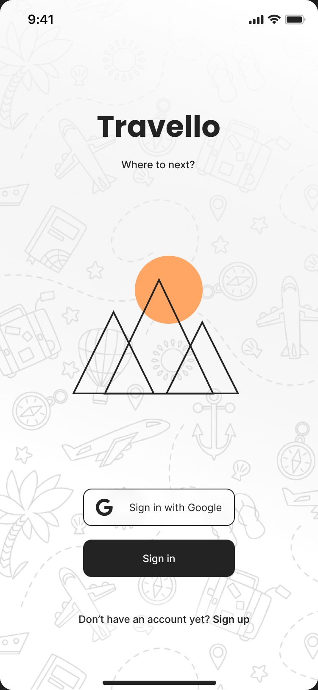
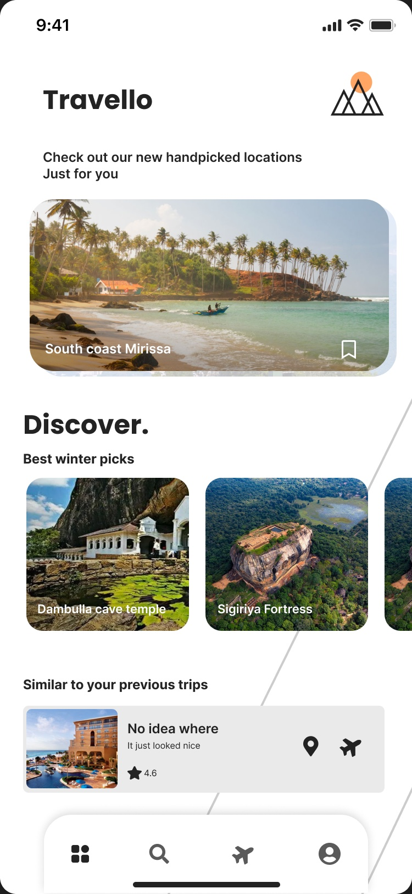

Where to next?
A travel companion for finding new places to visit, planning the trip, and keeping a timeline of every place you have been.


Three things
Travello is built around what a keen traveller does before, during and after a trip. Tap a card to see the screens.
Andy Garcia
“A change in Latitude works wonders on my attitude”
- Age
- 31
- Job title
- Content creator
- Status
- Single
- Location
- Atlanta, GA
About
Andy is a Content Creator that works for a Fortune 500 company in Atlanta, GA. Ever since she was a child, she loved to travel with her parents. Even now in her mid 30’s, during every vacation, every long weekend she would find herself on a trip of some caliber; be it a hike with her friends, a visit to a historical museum or on a flight to witness one of the seven wonders.
She wanted an application or website that enabled her to find out new places to visit and keep track of all the locations that she paid visits to.
The designs
From the first sign in to the profile that remembers it all.